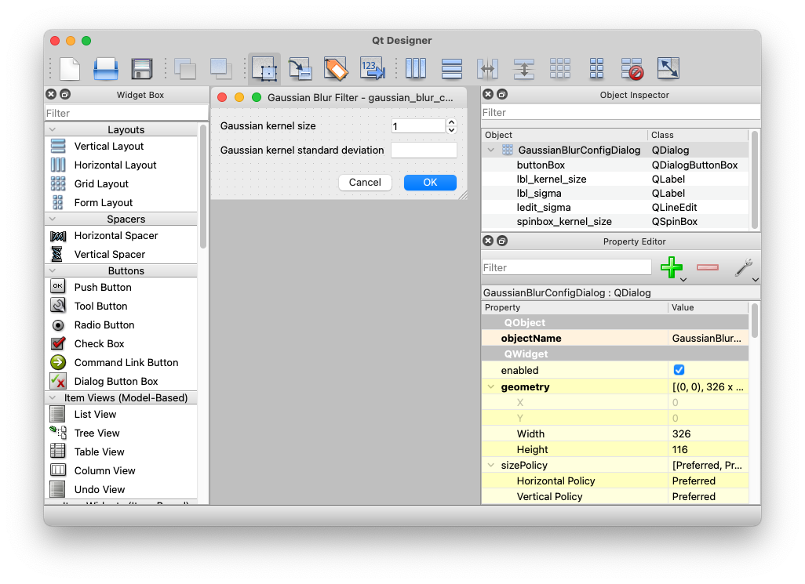

GUI Plugins in WISER¶
WISER is written using the Qt 5 API and the PySide2 Python bindings provided by The Qt Company. Plugins that wish to provide graphical user interfaces for configuration or workflow must also use Qt 5 to build this functionality. This is likely to be common in tool plugins and context-menu plugins; band-math plugins, on the other hand, should not show UI components.
Using Qt Designer¶
A plugin can construct a Qt user interface programmatically, but it is much
easier to use Qt Designer to
lay out a user interface and save it into a .ui file used by the plugin.
Once a .ui file has been created, there are two possible approaches for
instantiating the UI. One is to use the PySide2.QUiTools.QUiLoader class to
load the .ui file dynamically, and the other is to use pyside2-uic to
generate Python code from the .ui file. Each approach has its benefits and
drawbacks, which are described below. The second approach is recommended for
more sophisticated user interfaces, as it encourages an object-oriented approach
to the code layout, and it makes it easier to access the widgets that comprise
the GUI.
Here is an example configuration UI for a Gaussian blur plugin, which uses OpenCV to perform the blurring operation.
The following sections describe the two main approaches for loading the user interface.
Using QUiLoader¶
The QUiLoader approach is simple in that your plugin may dynamically load
the .ui file directly. The benefit is that your plugin’s development and
build process will be very simple; no additional code-generation steps are
necessary when you make UI tweaks. The downside is that your plugin code must
dynamically look up the various widgets in your UI by name, which is slower and
a bit more cluttered than generating Python code from the .ui file. This
approach may be preferable if you have a very simple user interface, with few
complexities like input validation or event handling.
WISER provides a helper function for plugins to load .ui files:
from wiser import plugins
from wiser.plugins import log_exceptions
class GaussianBlurPlugin(plugins.ContextMenuPlugin):
...
@log_exceptions
def on_gaussian_blur(self, context: Dict[str, Any]) -> None:
# If the .ui file is in the same location as the .py file, compute
# the path to the .ui file using the module's __file__ attribute.
path = os.path.join(os.path.dirname(__file__), 'gaussian_blur_config.ui')
# Load the .ui file to instantiate the QDialog object.
dialog = plugins.load_ui_file(path)
...
The load_ui_file() function will record helpful debug information into the
WISER logs when it runs, and will also log errors and raise exceptions if a
problem occurs.
As mentioned before, a minor downside of this approach is the need to look up the UI widgets within the dialog. The code continues:
class GaussianBlurPlugin(plugins.ContextMenuPlugin):
...
@log_exceptions
def on_gaussian_blur(self, context: Dict[str, Any]) -> None:
... # load the dialog, see above
# The spinbox that specifies the kernel size. This value should be
# odd, which is what the helper function _on_kernel_size_changed
# enforces.
sbox = dialog.findChild(QSpinBox, 'spinbox_kernel_size')
sbox.setValue(5)
sbox.valueChanged.connect(lambda v : _on_kernel_size_changed(sbox=sbox))
# The line-edit to hold the sigma value. This should be a floating-point
# value, so set up a validator on the field.
ledit = dialog.findChild(QLineEdit, 'ledit_sigma')
ledit.setValidator(QDoubleValidator(0.0, 1000000.0, 6))
ledit.setText('0')
# Show the dialog!
if dialog.exec() == QDialog.Accepted:
# Pull the values out of the UI widgets.
kernel_size = sbox.value()
sigma = float(ledit.text())
# Compute the Gaussian blur based on the parameters
...
@staticmethod
def _on_kernel_size_changed(sbox: QSpinBox) -> None:
# The value cannot be even.
value = sbox.value()
if value % 2 == 0:
sbox.setValue(value + 1)
Using pyside2-uic¶
The second way to build a graphical user interface using Qt Designer is to use
the pyside2-uic tool (part of Qt 5/PySide2) to generate Python code from the
.ui file made via Qt Designer. The benefit is that it’s very easy to access
the various UI widgets from your Python program, so if you have complex
workflows or UI interactions, input validation, event handling, etc., then this
will likely be your preferred approach. The downside is that you must set up a
Python development environment that includes Qt 5/PySide2, so that you can use
the tools that come along with the PySide2 library.
Use the pyside2-uic program to generate Python code from the .ui file:
pyside2-uic gaussian_blur_config.ui > ui_gaussian_blur_config.py
Note
This code-gen step must occur after any change to the .ui file, or else
the changes will not show up when the program runs.
Once this is completed, you can create a new Python class to wrap your user interface, and provide whatever customization or helper operations that may be needed.
from .ui_gaussian_blur_config import Ui_GaussianBlurConfigDialog
class GaussianBlurConfigDialog(QDialog):
def __init__(self, parent=None):
super().__init__(parent=parent)
# Set up the UI state
self._ui = Ui_GaussianBlurConfigDialog()
self._ui.setupUi(self)
# Customize the behavior of specific UI widgets
self._ui.spinbox_kernel_size.setValue(5)
self._ui.spinbox_kernel_size.valueChanged.connect(
self._on_kernel_size_changed)
self._ui.ledit_sigma.setValidator(QDoubleValidator(0.0, 1000000.0, 6))
self._ui.ledit_sigma.setText('0')
def _on_kernel_size_changed(self) -> None:
# The value cannot be even.
value = self._ui.spinbox_kernel_size.value()
if value % 2 == 0:
self._ui.spinbox_kernel_size.setValue(value + 1)
def get_kernel_size(self) -> int:
return self._ui.spinbox_kernel_size.value()
def get_sigma(self) -> float:
return float(self._ui.ledit_sigma.text())
It should be obvious that this approach is completely equivalent to the approach
of using QUiLoader. However, this approach is more desirable for complex
user interfaces, as it encourages a more object-oriented approach, and it makes
it much easier for the code to access individual UI components.
Since the complexity of managing the dialog is encapsulated in the
GaussianBlurConfigDialog class, the plugin’s main handler function becomes
very simple:
class GaussianBlurPlugin(plugins.ContextMenuPlugin):
...
@log_exceptions
def on_gaussian_blur(self, context: Dict[str, Any]) -> None:
dialog = GaussianBlurConfigDialog()
if dialog.exec() == QDialog.Accepted:
kernel_size = dialog.get_kernel_size()
sigma = dialog.get_sigma()
# Compute the Gaussian blur based on the parameters
...